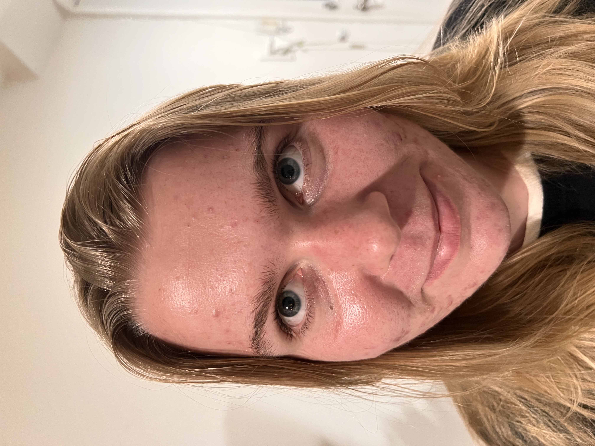
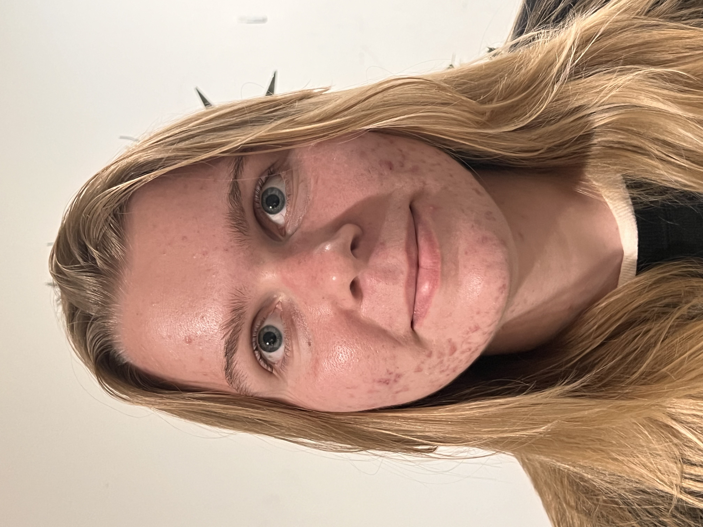
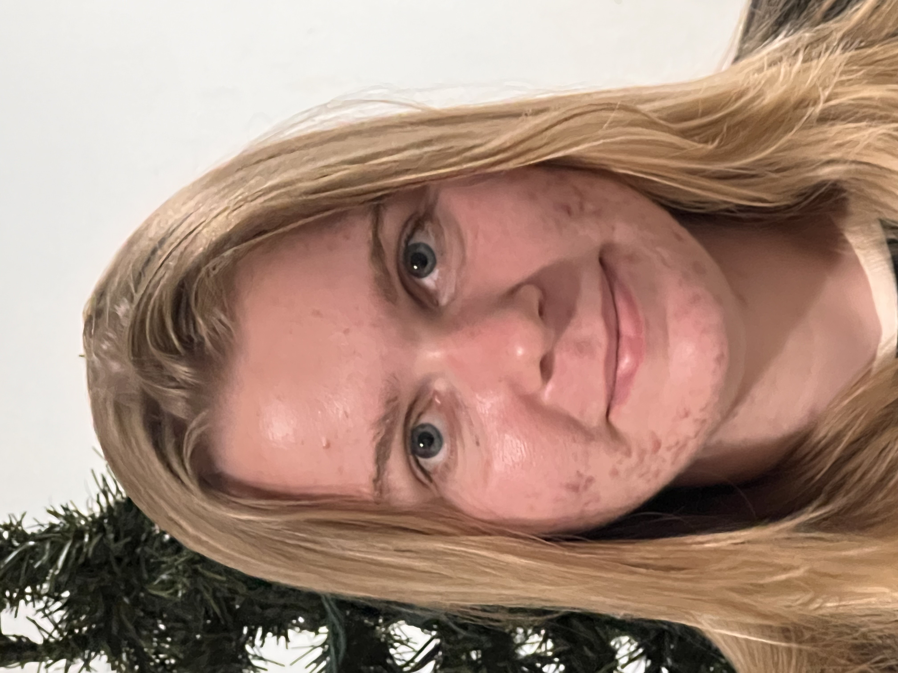
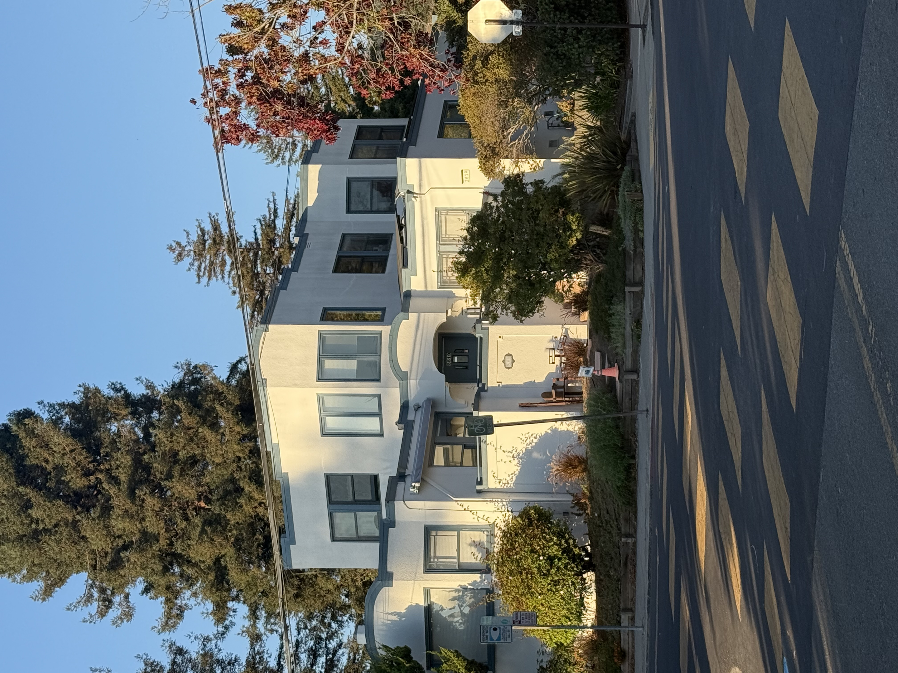
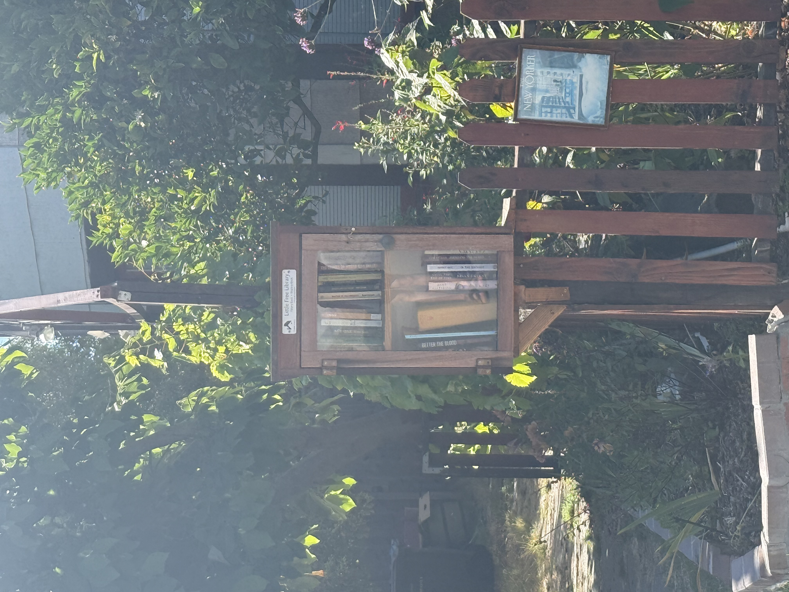

Part 1: Selfie: The Wrong Way vs. The Right Way
Here are 3 pictures of myself (photographed by my friend Vasilisa):
Close to my face with no zoom
1 step back + zoom in
2 steps back + even more zoom in
Even though my face is alligned to be the same size in every shot, I think it looks progressively better after Vasilisa steps away from me, capturing my features without it looking too angular and stretched out like in the very first shot.
This is happening because of lens distortion when the camera is too close to me. Anything close to the camera is going to look larger, so my nose and eyes in first image look comically huge!
The small focal length here makes me look too pointy. Taking a step or two back and zooming in helps the perspective become more natural, making my features appear well-proportioned and more flattering.



Part 2: Architectural Perspective Compression
I wanted to test this effect on both a larger and a smaller object, so here are photos of a house and a little free library.
The first photos are zoomed in from a faraway distance, which makes the house lose some of its depth and appear almost squished, with the trees in front and behind looking like they are attached to its walls.
In the second photo, taken closer without zoom, the house’s full volume and the distance between its wings are more clearly defined, and the surrounding trees look better proportioned and more distinct.
The little free library shows a similar effect: in the zoomed-in photo it appears very flat, almost the same volume as the thin fence next to it, while the closer photo without zoom brings out its shape, volume, and the details of the books inside more clearly.
In both examples, the first photos look flattened compared to the second ones because zooming in shifts focus to the central object while losing some perspective around it, whereas moving closer without zoom maintains natural perspective, preserving the scale and depth that our eyes perceive.




Part 3: The Dolly Zoom
For the Dolly Zoom, I wanted to test the effect on both a larger and a smaller object.
The first Dolly zoom focuses on a car parked in the street.
This is my favorite because the diverse background noticeably shrinks as I step back, while the car itself remains the same size.
A cool effect is how my and Vasilisa's shadows (bottom right of the car) gradually recede and disappear to the right, even though we are stepping back in a straight line!
The second Dolly zoom is on a toy horse. This one is less effective because the background is a flat white wall, so there is little variation in depth between shots, leaving us without the "disorienting" effect that the Dolly zoom is known for.
Car

Horse

Bonus: Dolly Zoom not really effective on a flat image
For fun I also tried to make a Dolly of this bird painting I saw on the side of a house.
The Dolly zoom is much less effective on the flat bird mural because there is no real depth in the scene.
Since the subject and background are essentially on the same plane, stepping back and zooming does not create the disorientation.
The effect relies on having objects at different distances from the camera, so on a flat image, the background does not appear to recede, and the disorienting effect is lost.